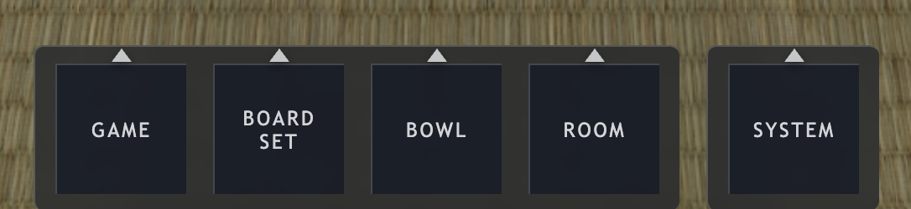

2026-02-18
Menu design for 3D games is much harder than I thought
When we first started building Deep Board Go, I assumed the menu would be the easiest part, just buttons floating over the scene. In reality, menu design in a 3D environment quickly becomes a complex UX challenge. Camera perspective, depth perception, lighting, scaling across different resolutions, and keeping the UI readable without breaking immersion all require careful balancing.
Even simple choices, like whether a menu should exist in screen space or world space, affect performance, usability, and visual clarity. Surprisingly, the feature players interact with first often takes longer to refine than many core gameplay systems.
